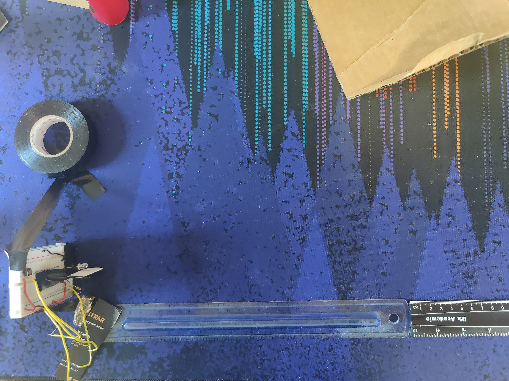
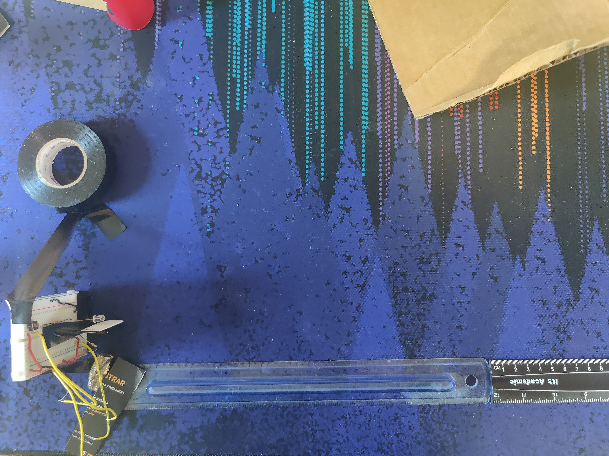

Week 7: Electronic Input Devices
Fabricating a IR Sensor
I wanted to devlop and calibrate a sensor that I could potentially use for my final project. The only sensor I still needed that I has was a distance sensor, so I settled on that. I was also intrigued by the low cost nature of the IR sensor, so I followed Robert Hart's tutorial to get that wired up and tested with the AnalogReadSerial example. It took me a VERY long time to realize that the LED I was using (a small square one) was not a IR LED (same as RGBW but with 2 legs). This served as a helpful reminder to always check the kit spreadsheet. Based on Silvia's notes, I knew I would need to consider gaurding each sensor from unintended IR light. After some testing, I realized that my IR phototransistor was heavily directional, only letting light in directly from the top. Because of this, the only sheilding I used was some simple cardstock between the LED and phototransistor. To reduce the effect of other IR sources like sunlight, I impleneted a type of chopping. I went back and forth on whether to wire the LED to a button, but ended up deciding not to. The LED can then be wired with 5v and a 100 Ohm resistor to give maximum brightness, making it easier to detect farther objects. The phototransitor was wired with a 10 MOhm resistor that I measured the voltage drop across of instead of the transistor, so higher reading = more light while still getting the full range from about 100 to 1024.
 

The Code
The code for this sensor is just analogRead with 3 modifications. First, each value is not the absolute value, but the value subtracted from a baseline from when no object was in the way (~100). In my tests, I used a button to get a new baseline when I wanted to reset based on the conditions. This gave a range from about -5 to 900 for the actual outputted values. Second, I averaged about 100-500 values to get more consistent readings. This also slowed down the readings to the point where I didn't need a delay. Third, I inputted a function to turn the values from readings to distances. Code
void loop() {
state = !digitalRead(button);
if (!state) {
if (baseline == 0) { //1st time
baseline = avg(1000);
}
baseline = (avg(1000) + baseline) / 2;
}
result = avg(1000) - baseline;
Serial.println( -6.2*log(result) + 33.7);
}
Calibration
I tested and calibrated the sensor in a dark room, reflecting the light against a peice of carboard. Although it's not the most reflectove object, I thought it would give realistic results for the most common use cases. I measured the distance from the sensor to cardboard, and started gathering values, reseting the baseline each time to improve consistency. This made the graph shown to the right. As I went down in distance, I could see that the reading was going up faster and faster, so I took more readings in between in an effort to keep the output readings evenly spaced, since I knew that in the end I would be going from reading to distance and not the other way around. As can be seen, the sensors behavior at high distances and low distances can be unpredictable. In particular, the sensor gave a lower reading when there was an object far away (~60cm) than when there was no object. I'm not entirely sure why this would happens, but I would guess it has something to do with how the light scattered around in the room I was testing in, while being absorbed by the cardboard. If the object was too close to the sensor, it wouldn't let the light across the divider, creating a lower reading than expected. Once I plotted this data, I realized that it followed an exponetial curve. I knew it was possible to fit an exponetial curve to it, but I didn't know how (Statistics are mysterious) so I followed the steps of Dan. This involved representing the data linearly, fitting a line to that data, then undoing the linearization to get a curve fitted to the data. Once I was finished, I had a curve to turn readings to values in cm. I tested this out, and found that my readings within 2cm of my measurements with my ruler. The sensor also worked through water (with some recalibration), which was a big plus for my final project.
Linearized representation of data
Fitted Curve
Capacitive Sensor: Speedometer
My main goal in making a capacitive sesnsor was to make something unique. To do this, I considered what different variables could be changed to vary a capactive sensor's output based on the equations from class. I came up with these 3: Area, Distance, and Material between the plates. I thought measuring some sort of timing would be interesting, so I combined this with varying the material between plates to create a speedometer. By starting a timer when a material like water enters the plates and ending it when it leaves, know the distance and the time it took to cross that distance, so I can calculate speed. At first I was using step response to get values, but everytime I reset the Arduino the threshold for when an object was inside the sensors changed, so I switched to Tx-Rx, since I could easily use 2 plates. To keep the plates in place and the same distance from eachother, I taped them to a roll of Duct Tape. This way, I could set a output value so that anything above that value would indicate that an object had entered the area of the plates. I chose to test and find this value with a water bottle.
Code
Similar to my other code, this code modifies and example from Robert Hart to average values and add a timer that starts counting when the value is below a threshold. Using a bit of boolean algebra, the code starts coutning when the threshold is reached and will update each time the value is below that threshold until the value returns to center. It updates each time rather than having just one start and stop because of the noise in the signal that will occasionally bring the value back above the threshold. Code
// If we are out of the old cycle and cross the threshold, start the timer
if (result <= thresh && !counting) {
interval = millis();
counting = true;
}
// If we are still past the threshold and on the same cycle, update the speed
else if (result <= thresh && counting) {
// 5 is height of plates, unit conversion
vel = ((5.0 + objHeight) * 10.0) / (millis() - interval);
}
// can only reset counting once system has returned to normal
if (result >= retThresh && counting) {
counting = false;
}
Limitations
The two main limitions with this sensor were the time to take a sample and enviornmental factors. When dropping an object through the ring, the object fell too fast to actually register on the Arduino, making it impossible to measure objects that moved too fast. Since the sensor also needs to be averaged to get accurate readings, it was hard to tell if a fast object was an actual object or a spike caused by noise. Also, the enviornment influenced the readings heavily. How close I was to the object would affect the readings, meaning I had to update the threshold. The object would also start influencing the sensor before it crossed over the sensor pads, making it difficult to set a threshold. The distance that the object started appearing on the sensor kept changing, further complicating the threshold. More padding and insulation might help solve this.